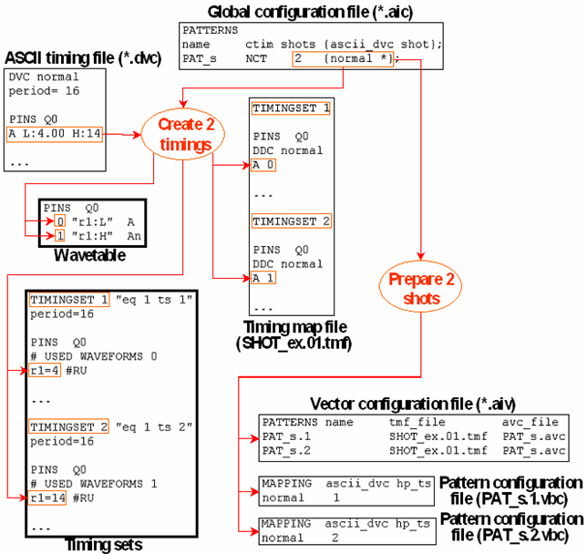

Example 1
The following figure shows how the shots are generated for a shots value of 2 (the binary vector file has been omitted):

The following figure shows how the shots are generated for a shots value of 2 (the binary vector file has been omitted):
